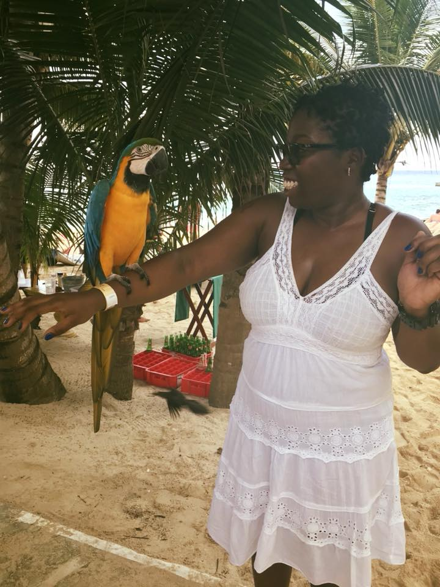

About me
Outside of work, I enjoy traveling and exploring new destinations that inspire relaxation and creativity. I also take pride in maintaining and improving my home, always finding productive ways to enhance my surroundings. Above all, I devote my time to being a dedicated mother, balancing family life with purpose, care, and commitment.
Vacation
DIY enthusiast
I’m a proud mother who loves getting hands-on, whether it’s fixing cars or tackling home improvement projects. There’s something satisfying about problem-solving and seeing a project through from start to finish, and I enjoy sharing that energy with my family. Balancing motherhood with my DIY and mechanical hobbies keeps life exciting, rewarding, and full of learning every day.